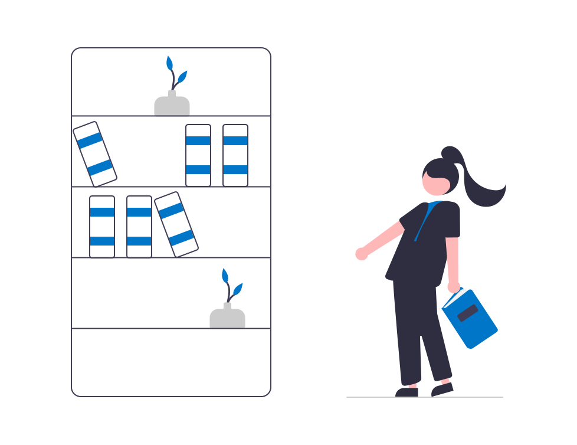

Objetivos
1
Proporcionar acceso fácil, oportuno y expedito a la información documental en formato digital que apoya los programas de estudio e investigación.
2
Satisfacer las necesidades de información a través de recursos de información
de servicios al público.
3
Coadyuvar en la formación profesional del estudiante y actualización de los profesores e investigadores en lo relativo al uso de la información documental.

Colecciones digitales

Servicios al público

Servicios de Desarrollo de Habilidades informativas
Beneficios
1Recursos de información
- Ingreso sin límite de concurrencia
- Consulta y descarga de textos completos
- Descarga de libros electrónicos por tiempos determinados
- Impresión de paginas e incluso capítulos completos de libros
2Tecnológicos
- Requisitos mínimos de hardware y software para el acceso
- Acceso personalizado para el usuario
- Soporte técnico para el usuario
- Acceso en dispositivos móviles

3Servicios especiales
- Servicio las 24 horas del día los 365 días del año
- Servicios Bibliotecarios especializados
- Bibliotecarios Digitales
- Capacitación virtual y presencial